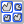
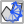

Utilities
Move and orient objects, project outlines, and normalize values.
AlignToPlane

Align an object to a plane
Nickname: AlignPlane
Moves a design object so that its local frame coincides with Plane. The local frame is the object's LocalPlane: X along PCA1, Y along PCA2, Z along PCA3, with its origin at the center of the object's oriented bounding box. The component builds a plane-to-plane transform from that frame to Plane and applies it, so after alignment the bounding-box center sits on the plane origin, PCA1 points along the plane's X axis, PCA2 along its Y axis and PCA3 along its normal.
The move is rigid (rotation plus translation). The object keeps its concrete type (a LinearObject stays a LinearObject, with its quantity and buffers), and its analysis is moved with it rather than recomputed: the PCA axes, centroid, sampled points, local box and hulls are transformed, and Length, Width and Height do not change. The input object is not modified; a copy is returned.
Use it to lay a reclaimed object flat in a known orientation, for example before taking a PlanarOutline or for drawings and fabrication layouts. The aligned object can go straight into the Set components (LinearSet, PlanarSet, BoxSet, SphereSet). To lay out many objects at once, use Knoll; to align one object onto another, use AlignToObject.
Notes
Transformis the plane-to-plane transform that was applied. Use it to move related geometry (labels, connection details) the same way.- The sign of each PCA axis is fixed by the object analysis, so an object can land flipped end to end relative to what you expect. Use
RotatePCAafterwards to turn it.
Inputs
| Name | Nickname | Type | Access | Default | Description |
|---|---|---|---|---|---|
Object | Object | DesignObject | item | Object to align | |
Plane | Plane | Plane | item | World XY | Plane to align to |
Outputs
| Name | Nickname | Type | Access | Default | Description |
|---|---|---|---|---|---|
Object | Obj | DesignObject | item | Aligned object | |
Geometry | Geo | Geometry | item | Geometry of aligned object | |
Transform | T | Transform | item | Transformation object used in alignment |
Knoll

Knoll a collection of objects
Nickname: Knoll
Lays a list of design objects out in a flat grid on OriginPlane, each object turned so that its longest axis runs along the plane's Y direction ("knolling"). The layout is worked out from each object's oriented bounding box: Length is the extent along PCA1, Width the extent along PCA2.
Layout. The objects are placed in list order, row by row. Each row holds ceil(N / NumRows) objects, where N is the number of objects. Within a row, objects advance along the plane's X axis: the first object's box starts ColSpacing from the origin, and there is a gap of ColSpacing between neighboring boxes. Rows advance along the plane's Y axis: the first row starts RowSpacing from the origin, each row is as deep as the longest object in it, and there is a gap of RowSpacing between rows. Within a row, the objects' boxes are aligned on the edge nearest the plane's X axis. Each object is moved so that its bounding-box center lies in the plane, with PCA1 along the plane's +Y axis, PCA2 along its −X axis and PCA3 along its normal.
Each placement is a rigid move. The objects keep their concrete type and analysis (PCA axes, local box, hulls are moved, not recomputed), so knolled objects can feed the Set components or ObjectProperties directly. The input objects are not modified.
Use it to review an inventory visually, to check abstractions side by side, or as a starting point for cutting or storage layouts. To align a single object to a plane, use AlignToPlane.
Notes
NumRowsis clamped to the range 1 to N. Because the row length is rounded up, the last row can be shorter than the others, and with some combinations the last rows are empty.- Spacing values are in model units. Object heights (PCA3) are not used in the layout.
Inputs
| Name | Nickname | Type | Access | Default | Description |
|---|---|---|---|---|---|
Objects | Objs | DesignObject | list | Collection of objects to knoll | |
OriginPlane | Plane | Plane | item | World XY | Plane that defines the starting origin of grid |
NumRows | nRows | Integer | item | 1 | Number of rows in knoll |
RowSpacing | dRow | Number | item | 1 | Spacing of rows |
ColSpacing | dCol | Number | item | 1 | Spacing of columns |
Outputs
| Name | Nickname | Type | Access | Default | Description |
|---|---|---|---|---|---|
Objects | Objs | DesignObject | list | Knolled objects | |
Geo | Geo | Geometry | list | Geometry of knolled objects |
Normalize
Normalize a list of numbers by its max value
Nickname: Normalize
Rescales a list of numbers so that its largest value becomes Factor. Every value is multiplied by the same number, Factor / max(Values):
\[v_i' = v_i \cdot \frac{F}{\max_j v_j}\]
With the default Factor of 100, the largest value becomes 100 and the others become a percentage of it. Ratios between values are kept; the result is unitless.
Why normalize before building a cost matrix. The distance components (EuclideanDistance, AsymmEuclideanDistance, ManhattanDistance) round every distance up to the next integer before Match solves the assignment. Two consequences follow:
- Small values lose precision. If a feature is measured in meters and lies between 0 and 1, distances of 0.2 and 0.9 both become a cost of 1, and the solver cannot tell the candidates apart. Scaling the feature to 0–100 makes one cost unit equal to 1% of the largest value.
- Features of different magnitude are weighted unequally. In a feature vector holding a length in millimeters (thousands) and an aspect ratio (around 1), the length dominates every distance. Normalizing each feature to the same range gives them comparable weight; a different
Factorper feature acts as a deliberate weight.
Where it sits. Normalize one property list (for example the Length output of ObjectProperties or LinearSet's EffectiveLength) before it goes into an input of FeatureVector.
Notes
- Each call uses its own maximum. If demand and supply are normalized with two separate Normalize components, they are scaled by different numbers and their distances are no longer comparable. Use
PairNormalizeto scale both by a shared maximum. - The divisor is the largest value, not the largest absolute value. If it is not positive (all values zero or negative), the component stops with the error "The largest value is ...; normalizing needs at least one positive value".
Inputs
| Name | Nickname | Type | Access | Default | Description |
|---|---|---|---|---|---|
Values | Vals | Number | list | Values to normalize | |
Factor | F | Number | item | 100 | Factor to multiply after normalization |
Outputs
| Name | Nickname | Type | Access | Default | Description |
|---|---|---|---|---|---|
NormalizedValues | Vals | Number | list | Values multiplied by Factor / max(Values), so the largest becomes Factor |
PairNormalize
Normalize two lists of number by the overall maximum value
Nickname: PairNormalize
Rescales two lists of numbers by one shared value, so that the largest value across both lists becomes Factor. The shared maximum is M = max(max(A), max(B)), and every value in both lists is multiplied by Factor / M:
\[a_i' = a_i \cdot \frac{F}{M}, \qquad b_j' = b_j \cdot \frac{F}{M}\]
Normalizer outputs M itself (not the multiplier), so an original value can be recovered as v' * M / Factor.
Why normalize before building a cost matrix. The distance components (EuclideanDistance, AsymmEuclideanDistance, ManhattanDistance) round every distance up to the next integer before Match solves the assignment. Features with small values (for example lengths in meters between 0 and 1) mostly round up to the same cost of 1 and can no longer be told apart, and features of very different magnitude are weighted unequally, because the largest one dominates the distance. Scaling each feature to 0–Factor addresses both; with the default of 100, one cost unit is 1% of the largest value.
Why a pair. A cost matrix compares demand feature vectors with supply feature vectors, so the same feature must be on the same scale on both sides. Feed the demand values into A and the supply values into B (for example the Length of the designed members and of the reclaimed stock); both are divided by the same maximum, which keeps their distances meaningful. Two separate Normalize components would each use their own maximum and distort the comparison. Send NormalizedA and NormalizedB to the matching inputs of the demand and supply FeatureVector components, using one PairNormalize per feature.
Notes
- The divisor is the largest value, not the largest absolute value. If the shared maximum is not positive, the component stops with the error "The largest value is ...; normalizing needs at least one positive value".
Inputs
| Name | Nickname | Type | Access | Default | Description |
|---|---|---|---|---|---|
A | A | Number | list | First list of numbers | |
B | B | Number | list | Second list of numbers | |
Factor | F | Number | item | 100 | Factor to multiply after normalization |
Outputs
| Name | Nickname | Type | Access | Default | Description |
|---|---|---|---|---|---|
NormalizedA | A | Number | list | A multiplied by Factor / Normalizer | |
NormalizedB | B | Number | list | B multiplied by Factor / Normalizer | |
Normalizer | N | Number | item | The largest value in A and B (values are divided by it) |
PlanarHull

Get the planar convex hull of an object
Nickname: Hull2D
Returns the 2D convex hull of a design object, projected onto a plane, as a planar Brep (a flat filled region).
How it is computed. The component takes the object's sampled points, the points stored when the object was analyzed (their number and spacing come from the object component's sampling, for example NumSamples). The points are expressed in the coordinates of the projection plane and their convex hull is computed in that plane with Grasshopper's 2D convex hull solver; the result is a closed polyline in the plane, which is turned into a planar Brep.
The projection plane is the object's PCA1–PCA2 plane when Plane is not connected. When a Plane is supplied, only its orientation is used: its origin is moved to the center of the object's oriented bounding box. The hull therefore always passes through the object's own location, not through the supplied plane's origin.
Because the hull is built from the samples, it encloses the sampled points rather than the exact geometry: between samples (for example along a curved edge of a Brep) the hull can cut slightly inside the true silhouette. Increasing the object's sample count tightens it.
When to use it. Use it for a quick footprint of an object, such as the area of its top view (use Grasshopper's Area component on the output) or a convex region for nesting and clash checks. ObjectProperties exposes the convex hull of the same points in the PCA1–PCA2 plane as a curve (PlanarHull). For the exact, possibly non-convex silhouette of the geometry, use PlanarOutline.
Notes
- The output is a convex polygon; concave features of the object (notches, L-shapes) are bridged over.
Inputs
| Name | Nickname | Type | Access | Default | Description |
|---|---|---|---|---|---|
Object | Obj | DesignObject | item | Object to analyze | |
Plane | Plane | Plane | item (optional) | PCA Plane to project to |
Outputs
| Name | Nickname | Type | Access | Default | Description |
|---|---|---|---|---|---|
Hull | Hull | Brep | item | Planar hull |
PlanarOutline
Get the planar shadow outline of an object
Nickname: PlanarOutline
Returns the "shadow" of a design object's geometry on a plane: the outline you would see looking straight down the plane's normal. Unlike PlanarHull, it works on the object's actual geometry, not its sampled points, and the outline can be non-convex.
Projection plane. Without a Plane input, the object's local plane is used (X along PCA1, Y along PCA2), so the outline is the object's top view in its own frame. A supplied Plane sets the orientation only. In both cases the origin is moved to the center of the object's oriented bounding box, so the outline lies at the object's location.
How each geometry type is handled.
- Curve: the curve is projected onto the plane and returned as is. An open curve stays open; this is a projection, not an outline.
- Mesh: the mesh outline on the plane (Rhino's
Mesh.GetOutlines). The outline polylines are joined and the outer boundary is returned (see below). - Brep: the Brep is meshed with default meshing parameters, then treated as a mesh.
- Point cloud: the 2D convex hull of the points in the plane.
If the mesh outline fails (it can when faces are edge-on to the plane or project onto each other, as with a box seen along its own axes), and the mesh or Brep is closed, the component retries with the front-facing faces only, which cover the whole shadow of a closed shape. If there is still no outline (or the shape is open, so the retry does not apply), it falls back to the 2D convex hull of the mesh vertices (for a Brep, its vertices plus the vertices of a coarse render mesh) and warns.
When to use it. The outline is the input for 2D shape descriptors: feed it to RadialSignature and then HarmonicAnalysisReal or HarmonicAnalysisComplex, or compare outlines directly with HausdorffDistanceCurve or FrechetDistance. Align objects first (AlignToPlane) if outlines of different objects should be compared in a common frame.
Notes
- Warning: "Could not compute the exact outline; returning the planar convex hull instead". The result is then convex and may be larger than the true shadow.
- Error: "Could not compute an outline for geometry of type …" when no curve could be produced; the output is empty.
- Only one curve is returned. For a shadow with holes or several disconnected parts, it is the closed loop with the largest area (the outer boundary), and a remark says how many loops there were. Before v0.5.1 it was whichever loop came first.
- The point-cloud result is always a convex hull, without a warning.
Inputs
| Name | Nickname | Type | Access | Default | Description |
|---|---|---|---|---|---|
Object | Obj | DesignObject | item | Object to analyze | |
Plane | Plane | Plane | item (optional) | Plane to project to (default: the object's local plane). Its origin is moved to the center of the object's oriented bounding box. |
Outputs
| Name | Nickname | Type | Access | Default | Description |
|---|---|---|---|---|---|
ProjectedCurve | Curve | Curve | item | Projected outline of object geometry |
RotatePCA

Rotate an object about one of its PCAs
Nickname: RotatePCA
Rotates a design object by RotationDegrees about one of its own principal axes. The rotation axis passes through the object's centroid (the Centroid reported by ObjectProperties) and points along PCA1, PCA2 or PCA3, selected by RotationAxis (1, 2 or 3; the input offers these as named values). The angle follows the right-hand rule about the axis direction: a positive angle turns counterclockwise when looking from the tip of the axis back toward the centroid.
The rotation is rigid. The object keeps its concrete type and its analysis is rotated with it instead of recomputed: the geometry, sampled points, PCA axes, local plane, local box and hulls are all transformed. Rotating about PCA1 therefore leaves PCA1 where it is and turns PCA2 and PCA3 around it, and Length, Width and Height are unchanged. The input object is not modified.
Use it to correct the orientation of an object after AlignToPlane, AlignToObject or Knoll, for example to flip a member end for end (180° about PCA3) or to roll a board onto its other face (180° about PCA1). The rotated object can feed the Set components or any other component that takes a design object.
Notes
RotationAxisshould be 1, 2 or 3. Any other value rotates about PCA3, as in earlier versions, with the warning "RotationAxis ... is not 1, 2 or 3; rotating about PCA3".- The pivot is the centroid, not the center of the bounding box (which
AlignToPlaneandKnollplace). For an asymmetric object the two differ, so the bounding-box center can move after a rotation. RotatedGeometryis a list. For a point-cloud object it holds the individual rotated points; for any other geometry it holds the single rotated geometry.
Inputs
| Name | Nickname | Type | Access | Default | Description |
|---|---|---|---|---|---|
Object | Obj | DesignObject | item | Object to rotate | |
RotationAxis | Axis | Integer | item | 1 | PCA axis to rotate about: 1, 2 or 3 |
RotationDegrees | Degree | Number | item | 0 | Amount to rotate (degrees) |
Outputs
| Name | Nickname | Type | Access | Default | Description |
|---|---|---|---|---|---|
RotatedObject | Obj | DesignObject | item | New rotated object | |
RotatedGeometry | Geo | Geometry | list | Rotated geometry |